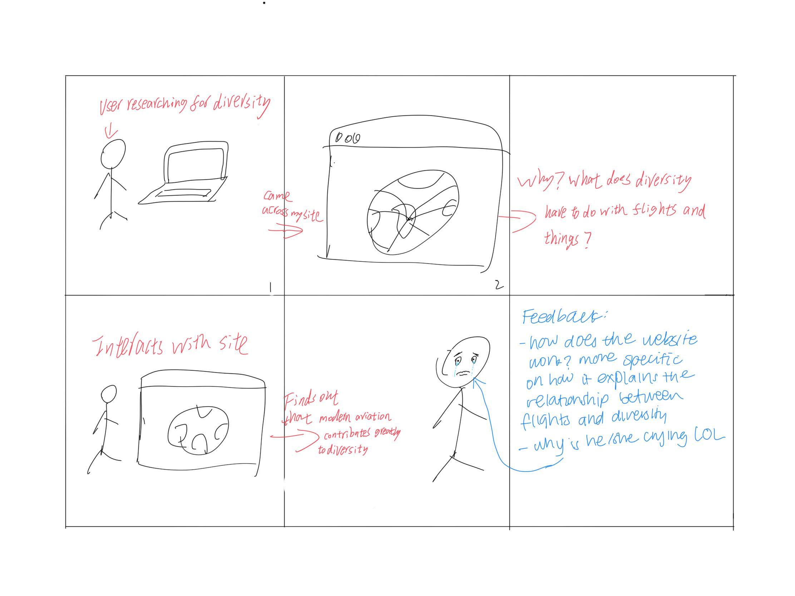

For the first story board, I set the environment of my project at the exhibition of DIS 2018 and the setting to be a projection on a big screen, but this setting does not make much sense to convey the nature and meaning of the project: the transitions between frames were too artificial rather than spantenous. And I got the feedback accordingly: my classmate did not really understand what my project was how it works and how does it contribute to diversity.
For the second iteration, I changed the environment to the user's home or study, and the setting is the user searching for diversity on his/her computer and came across my site. In this way, I was able to better convey what my project was and its purpose: the user would be curious about how flights connects to diversity and thereby continue to interact with the site to find out. But still, I was unable to demonstrate how it would work in only five frames.